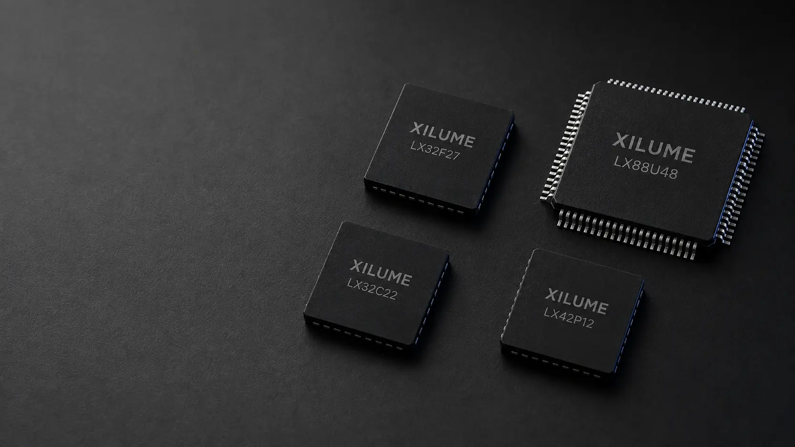

SELECT BY APPLICATION
What does your system need?
Browse the LX series.
F SERIES · CAN FD
LX32F27
Dual CAN FD controller
FORRobotics, vehicles, and embedded computers
View product →
C SERIES · CLASSIC CAN
LX32C22
Dual Classic CAN controller
FOREstablished CAN networks and machine control
View product →
U SERIES · MULTI-INTERFACE
LX88U48
Eight-channel hub controller
FORAutomation, test systems, and multi-port control
View product →
P SERIES · BATTERY + POWER
LX42P12
Smart-battery bridge
FORBattery-powered computers and industrial equipment
View product →

APPLICATION SUPPORT